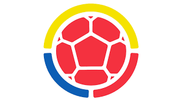

Deportes Individuales
Taekwon-Do: El Taekwondo es mucho más que una simple práctica deportiva. Es una disciplina que involucra cuerpo y mente, valores y principios, y que puede ser practicada por cualquier persona que desee mejorar su calidad de vida.
Su faceta competitiva es solo una de las muchas opciones que ofrece a la hora de convertirse en una actividad que acompañe al taekwondista durante toda su vida, aportándole recursos necesarios para el desarrollo personal.
Se fundamenta en diversos principios que han sido influenciados tanto por las distintas corrientes filosóficas chinas como por el nacionalismo coreano. Incluye valores como la cortesía, la integridad, la perseverancia y el autocontrol..
Judo: Introducción:
El judo es un arte marcial, su práctica se realiza bajo un ambiente de respeto, disciplina y exigencia, para el constituye una gran importancia el desarrollo de todas las capacidades físicas, variados y disímiles son los métodos que utiliza este para el desarrollo de dichas capacidades
Objetivo:
Elaborar un programa de judo para la enseñanza-aprendizaje de las técnicas básicas en los estudiantes de la carrera Pedagogía de la Actividad Física y Deporte de la Universidad de Guayaquil..

Así como el resto de las ya muy conocidas al menos de forma general, artes marciales, el hapkido nació en el fantástico continente asiático y su enfoque está orientado hacia una defensa personal bastante particular porque abarca desde un punto de vista militar hasta uno civil. Este doble enfoque tan interesante es gracias al entender que se defiende la persona y lo que ésta representa de forma más global incluyendo a su familia y por ende a su país o nación, logrando así el enfoque de defensa tanto en milicia como para un civil..
Aikido: Aikido es un Arte Marcial japonés desarrollado por O’Sensei (Gran Maestro) Morihei Ueshiba. El nombre de este arte proviene de los siguientes ideogramas:
Ai: es la unión, la armonía o desarrollo natural de los fenómeno.
Ki: es la esencia vital; la energía propia de todo ser y de la naturaleza misma. Similar alconcepto de Chi en China o Prana en la cultura de India.
Do: es la senda, camino o manera de actuar.
Así la interpretación de Aikido podría ser “el camino en que logramos la armonía con la energía natural”..
Sambo: Se trata de un estilo de lucha originado en Rusia, desarrollado desde finales del siglo XIX y oficializado como un sistema de combate para el ejército rojo el 16 de noviembre de 1938. La influencia de la Unión Soviética y los emergentes mecanismos económicos que poseía, dieron como resultado que un grupo de expertos viajase por todo el mundo recopilando las técnicas más eficaces de otras disciplinas, tales como el Judo, el Jiujitsu, la Lucha Grecorromana, la Lucha libre, el Boxeo y el Muay thai entre otras, fusionándolas con los estilos de pelea autóctonos de las naciones que conformaban a la URSS. Estas aportaciones dotaron al SAMBO de su actual fisonomía y a consolidarse como la disciplina que hoy se practica en todo el mundo..
Deportes de Conjunto

El baloncesto, también conocido como básquetbol o basketball, es un deporte de equipo que se juega entre dos conjuntos de cinco jugadores cada uno. A lo largo de su historia, este deporte ha experimentado una evolución significativa desde sus humildes orígenes hasta convertirse en uno de los deportes más populares a nivel mundial.
El origen del baloncesto se remonta a fines del siglo XIX, específicamente al 21 de diciembre de 1891, en Springfield, Massachusetts, Estados Unidos. Fue en ese momento cuando el profesor de educación física James Naismith ideó un nuevo juego para sus alumnos en la YMCA (Asociación Cristiana de Jóvenes) local, con el objetivo de mantenerlos activos durante el invierno.
Volleyball: El voleibol, volibol, vóley o balonvolea es un deporte que consiste en el encuentro de dos equipos compuesto por seis jugadores cada uno, que se enfrentan en una chanca dividida por una red o malla sobre la cual deben pasar una pelota a fin de que toque el suelo del campo contrario para hacer una anotación.
Por tanto, el objetivo del voleibol es lograr anotar puntos con los pases de pelota hacia el campo adversario, cosa que tratará de impedir el equipo contrario a través de jugadas defensivas como toques, ataques o bloqueos.
Cabe mencionar que el balón se puede impulsar con cualquier parte del cuerpo a través de golpes limpios. Sin embargo, por lo general se utilizan las manos y los antebrazos. Durante el juego la pelota no puede ser sujetada o retenida.

Futbol: Proyecto formativo que busca garantizar el relevo generacional en el deporte, brinda atención a niños niñas jóvenes y adolescentes del departamento, con habilidades excepcionales para la práctica deportiva y potencial de alto rendimiento. A su vez, este proyecto pretende realizar procesos de captación, identificación, selección, seguimiento y desarrollo de niños niñas jóvenes y adolescentes con condiciones especiales.
Baseball: Considerado como uno de los deportes de mayor antigüedad y uno de los más populares en la actualidad. Conocido también con el nombre de pelota, el béisbol es un tipo de deporte competitivo de mucha habilidad que se juega con una bola dura y un bate entre dos equipos que constan de nueve jugadores cada uno. Es visto como deporte nacional de Cuba y de Estados Unidos, ya que su tradición y popularidad son muy importantes, pero también se juega en muchas partes del mundo por personas de todas las edades.
Alexander J. Cartwright, un librero y fundador del Club Knickerbocker, se le atribuyen 14 reglas, que incluyen los tres outs para cerrar un turno al bate, el concepto de foul, el uso del verbo 'lanzar', en contraposición a la terminología del momento, que usaba el verbo 'tirar'. William Wheaton, otro fundador del Club Knickerbocker, probablemente fue otro de los padres de esas reglas. Durante la convención de 1857, los clubes también establecieron la distancia de 90 pies entre las bases, los equipos de 9 jugadores y los juegos de 9 entradas.
Desde el punto de vista de los Knickerbockers, se suponía que los lanzadores lanzaban la pelota por debajo del brazo. No sería hasta 1884, bajo la influencia de la forma en que se jugaba el juego en el Estado de Massachussets, que se introdujo el lanzamiento por encima del hombro. .
El sistema de puntuación en el tenis es particular. Los jugadores deben ganar puntos para obtener juegos, juegos para obtener sets y sets para obtener el partido. La puntuación se cuenta en series de 15, 30, 40 y juego, siendo necesario ganar cuatro puntos para obtener un juego, aunque hay ciertas reglas y escenarios especiales.
Rugby: ¿Qué significa Rugby?
El Rugby es un deporte de equipo que involucra a dos equipos compuestos por quince jugadores cada uno. El objetivo del juego es llevar el balón ovalado hacia la línea de gol del equipo contrario, anotando puntos al cruzarla o patear a través de los postes. El rugby se caracteriza por su combinación de habilidades físicas, tácticas y estratégicas, y es conocido por su intensidad y contacto físico.
¿Qué es el rugby?
El rugby es un deporte de equipo que se originó a mediados del siglo XIX en Inglaterra. A medida que evolucionó, se desarrollaron dos variantes principales: el rugby de unión y el rugby de liga. El rugby de unión se juega en todo el mundo y es conocido por su énfasis en el juego colectivo, mientras que el rugby de liga es más popular en Australia y algunos otros países, y tiene reglas ligeramente diferentes.
.